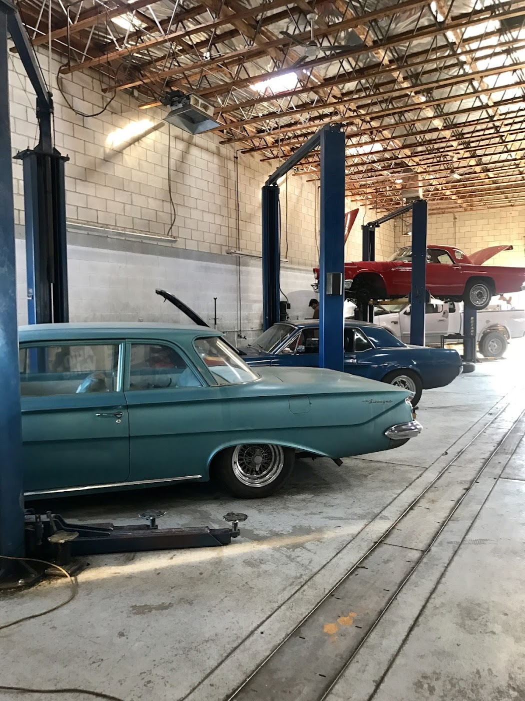
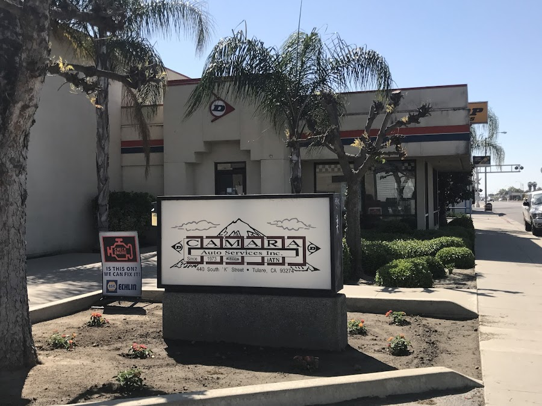
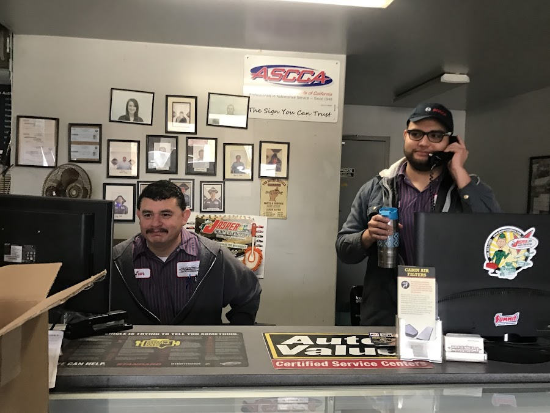
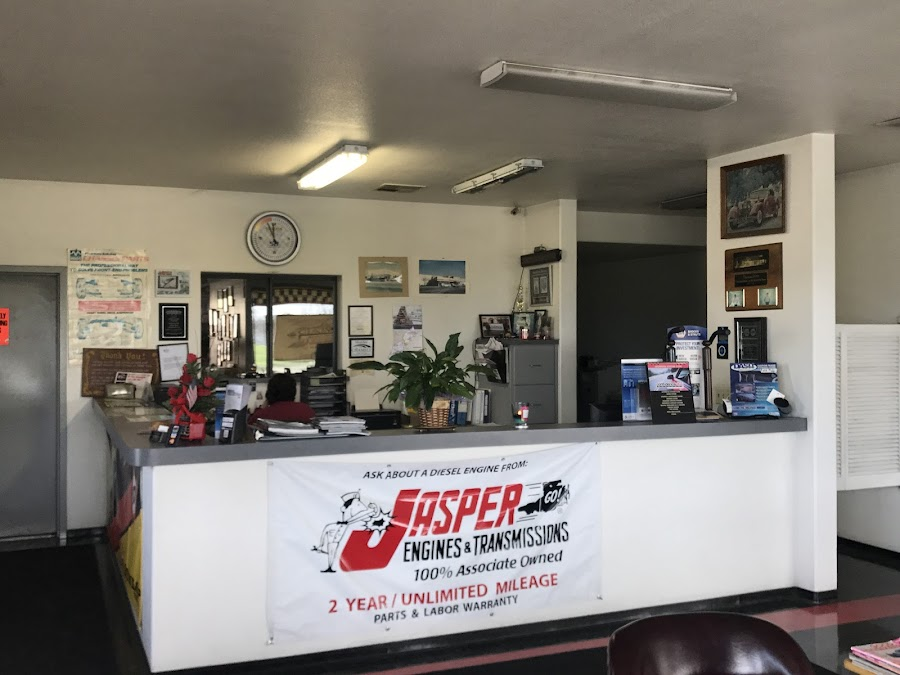
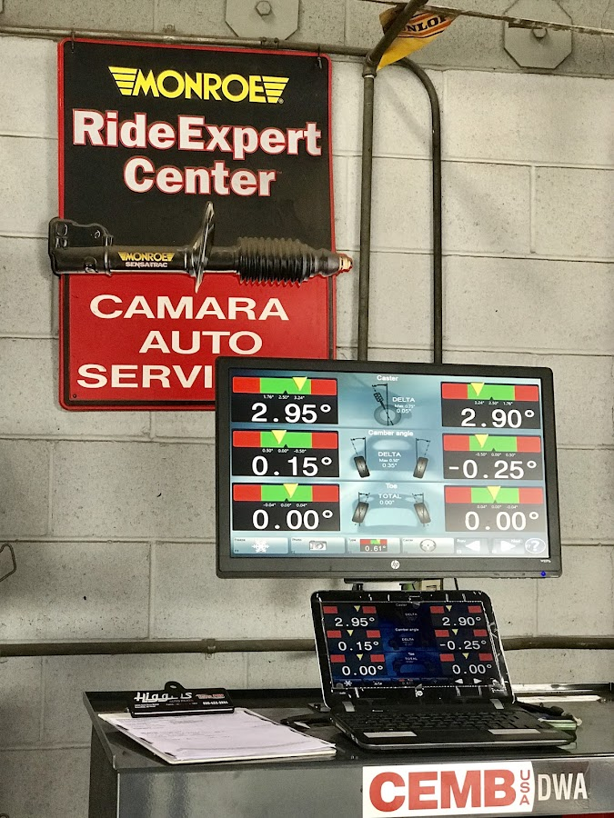
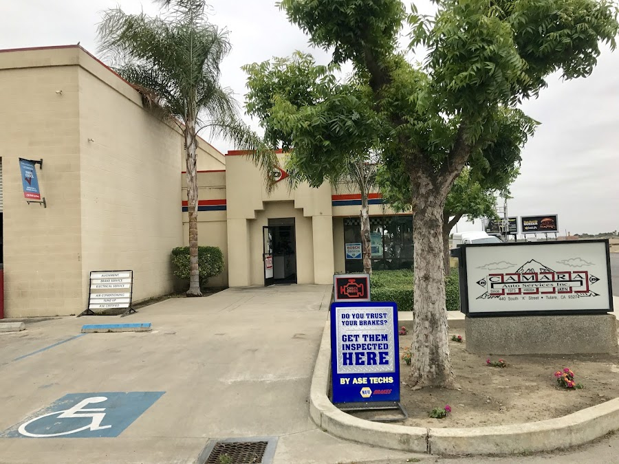

A family-trusted, full-service shop for domestic, Asian & European vehicles — the same straight answers and careful work the valley has counted on for over 50 years.

In the bays todaySince 1973, Camara Auto Services has kept Tulare moving. What started as a local shop on South K Street has become an institution — the place neighbors send their friends and family when something needs to be done right.
We work on everything from daily drivers to the classics our customers love, and we take the time to explain what your vehicle needs before any work begins. No surprises, no upsell — just an estimate you can trust and repairs that hold up.
As a proud member of the Automotive Service Councils of California (ASCCA), we hold ourselves to a professional standard. Walk in and you'll see decades of certifications and thank-you notes on the wall — and the people behind them are still right there at the counter.



From routine upkeep to the work that gets you back on the road, we handle it in-house with the diagnostics and parts to back it up.
Testing and the repairs to pass — get your tags, plates & registration sorted.
Inspections, pads, rotors and lines — "do you trust your brakes?" We'll tell you straight.
AC service, Freon charge and component repair to beat the valley heat.
Diagnostics, repair, and JASPER remanufactured engines & transmissions.
Precision alignments and a Monroe RideExpert ride-control center.
"Is it on?" Sensor, computer & electrical diagnostics done right.
Not sure what's wrong? We can fix it — bring it by and we'll take a look.
Classics on the lifts, modern diagnostics on the bench — and the same crew you'll talk to at the counter.


Folks in Tulare don't change mechanics often. Here's why they stay.
I work on a lot of my own vehicles, but when I need to take one in, this is the only place I trust.
— Ricardo G.The front receptionists are very welcoming, helpful and professional. The mechanics were very knowledgeable, answered all my questions and kept me informed. Being new to Tulare, I've found my regular service shop — I'd recommend this place to all my friends and family.
— Valerie S.We called to have my husband's AC serviced and got an appointment the next morning. The actual bill was less than the original estimate, and we were kept informed about the repairs and timeline. I recommend this business.
— Diane R.Put my truck in to have the catalytic converters changed & got it back in a very timely manner. Very respectful, helpful & explained everything before any work.
— Michelle S.Good place and good service — they fixed my car to pass smog and I got my plates and registration. I recommend them, they are fast and honest.
— Kanon D.On South K Street in Tulare. Stop in during shop hours or give us a call to set an appointment.
Give us a call and we'll get you a straight estimate and an honest timeline — same as we have for over fifty years.
Call (559) 688-5721